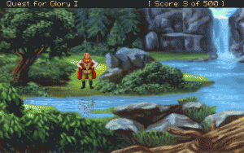

Quest for Glory - So You Want to Be a Hero?
| Emulator Required: | ScummVM, DOS BOX, Mac |
| Alternate Names: | QFG1, 영웅의 길 I: 당신도 영웅이 되고 싶은가 |
| Year: | 1992 |
| Platform: | DOS, Mac |
| Released in: | USA |
| Genre: | Adventure, RPG |
| Publisher: | Sierra On-Line Inc. |
| Developer: | Sierra On-Line Inc. |
Description of Quest for Glory - So You Want to be a Hero?
Originally released as Hero's Quest: So You Want to Be a Hero in 1989, Quest for Glory: So You Want to Be a Hero is an adventure game/role-playing game hybrid. It was published by Sierra On-line and designed by Lori Ann Cole. It is the first game in the Quest for Glory series and is credited with being a genre-defining game because it mixed graphical adventure gaming with role-playing-like elements such as statistic building (strength, intelligence, health, etc.) These attributes actually have an impact on the player's ability to accomplish certain parts of the game. Like most Sierra products, this game has a satirical and silly tone to it.
Quest for Glory I was billed as 'three games in one' - being the first game to introduce character classes: Fighter, Theif and Magic User. The character you choose determined largel how the game is played, and how to solve the puzzles throughout the game. Quest for Glory offered an authenticity that is not often found in RPG games today. There was linear time and Day and Night. The hero had to eat, and would become tired and require rest. Skills were gained through the regular course of adventuring, not via gaining levels in combat. Different activities caused you to gain skills in different areas. Quest for Glory I is one of the few Sierra adventure games where the player character had little to no dialogue.